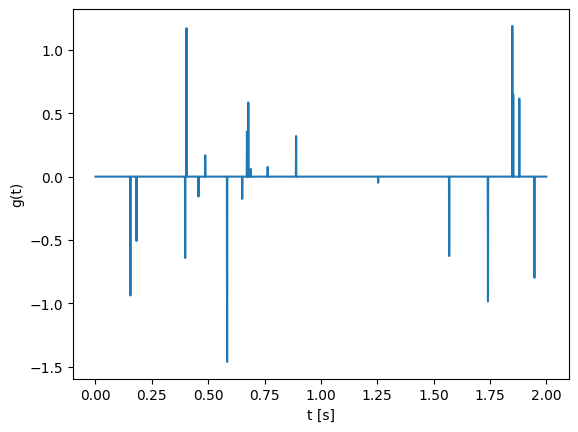
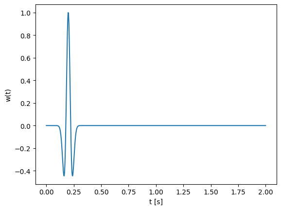
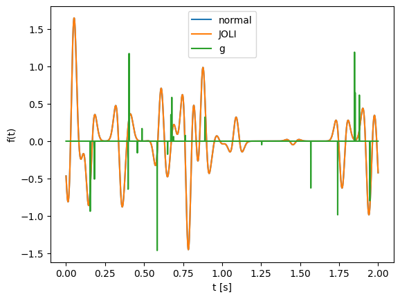

A = [1 2;3 -1]2×2 Matrix{Int64}:
1 2
3 -1Inverse problems arise in many areas of science and engineering where we aim to recover unknown model parameters from observed data. In contrast to forward problems where data are predicted from known model parameters, inverse problems attempt to reconstruct the model that explains the measurements.
In this exercise, we explore fundamental concepts of inverse problems using linear algebra and signal processing tools. We begin by studying linear systems of the form
[ A x = b ]
and investigate how the properties of the matrix (A) determine whether the system has:
We will examine orthogonality, invertibility, adjoints, and the role of the null space, all of which are central concepts in inverse theory.
The second part of the exercise introduces convolution and deconvolution, demonstrating how linear operators act in both the time and frequency domains. Using the Fourier transform, we explore:
Let’s start with some basic julia matrix operations
A = [1 2;3 -1]2×2 Matrix{Int64}:
1 2
3 -1A'2×2 adjoint(::Matrix{Int64}) with eltype Int64:
1 3
2 -1x = [2; 2]2-element Vector{Int64}:
2
2A1 = [1/sqrt(2) 2/3 sqrt(2)/6;0 1/3 -2*sqrt(2)/3;-1/sqrt(2) 2/3 sqrt(2)/6];
A2 = [0 2 2;2 1 -3;1 0 -2];
A3 = [3 1;1 0;2 1];
A4 = [2 4 3; 1 3 1];A1'*A1A2*[1;2;3] A2*[3;1;4]A3A4Find a solution of A1*x = [6;-3;0], is there only one solution? Do you really need inv here?
Find a solution of A2*x = [4;0;-1], is there only one solution? What characterizes the solution you found?
Find a solution of A3*x = [5;2;5], is there only one solution? What characterizes the solution you found?
Find a solution of A4*x = [10;5], is there only one solution? What characterizes the solution you found?
using Pkg
#Pkg.add("FFTW")using FFTW
# dimension
N = 10
F1 = zeros(Complex{Float64}, N,N)
for k = 1:N
# construct k-th unit vector
ek = zeros(N,1)
ek[k] = 1
# make column of matrix
F1[:, k]= fft(ek)
endF1using Random
vec = rand(Float64,10);using JOLIF2 = joDFT(N)joLinearFunction{Float64, ComplexF64}("joDFT_p", 10, 10, JOLI.var"#855#871"{DataType, Tuple{Int64}, FFTW.cFFTWPlan{ComplexF64, -1, false, 1, UnitRange{Int64}}}(ComplexF64, (10,), FFTW forward plan for 10-element array of ComplexF64
(dft-direct-10 "n2fv_10_avx2_128")), Nullable{Function}(JOLI.var"#122#126"{JOLI.var"#856#872"{DataType, Tuple{Int64}, AbstractFFTs.ScaledPlan{ComplexF64, FFTW.cFFTWPlan{ComplexF64, 1, false, 1, UnitRange{Int64}}, Float64}}}(JOLI.var"#856#872"{DataType, Tuple{Int64}, AbstractFFTs.ScaledPlan{ComplexF64, FFTW.cFFTWPlan{ComplexF64, 1, false, 1, UnitRange{Int64}}, Float64}}(Float64, (10,), 0.1 * FFTW backward plan for 10-element array of ComplexF64
(dft-direct-10 "n2bv_10_avx2_128")))), Nullable{Function}(JOLI.var"#856#872"{DataType, Tuple{Int64}, AbstractFFTs.ScaledPlan{ComplexF64, FFTW.cFFTWPlan{ComplexF64, 1, false, 1, UnitRange{Int64}}, Float64}}(Float64, (10,), 0.1 * FFTW backward plan for 10-element array of ComplexF64
(dft-direct-10 "n2bv_10_avx2_128"))), Nullable{Function}(JOLI.var"#123#127"{JOLI.var"#855#871"{DataType, Tuple{Int64}, FFTW.cFFTWPlan{ComplexF64, -1, false, 1, UnitRange{Int64}}}}(JOLI.var"#855#871"{DataType, Tuple{Int64}, FFTW.cFFTWPlan{ComplexF64, -1, false, 1, UnitRange{Int64}}}(ComplexF64, (10,), FFTW forward plan for 10-element array of ComplexF64
(dft-direct-10 "n2fv_10_avx2_128")))), true, Nullable{Function}(JOLI.var"#857#873"{DataType, Tuple{Int64}, AbstractFFTs.ScaledPlan{ComplexF64, FFTW.cFFTWPlan{ComplexF64, 1, false, 1, UnitRange{Int64}}, Float64}}(Float64, (10,), 0.1 * FFTW backward plan for 10-element array of ComplexF64
(dft-direct-10 "n2bv_10_avx2_128"))), Nullable{Function}(JOLI.var"#124#128"{JOLI.var"#858#874"{DataType, Tuple{Int64}, FFTW.cFFTWPlan{ComplexF64, -1, false, 1, UnitRange{Int64}}}}(JOLI.var"#858#874"{DataType, Tuple{Int64}, FFTW.cFFTWPlan{ComplexF64, -1, false, 1, UnitRange{Int64}}}(ComplexF64, (10,), FFTW forward plan for 10-element array of ComplexF64
(dft-direct-10 "n2fv_10_avx2_128")))), Nullable{Function}(JOLI.var"#858#874"{DataType, Tuple{Int64}, FFTW.cFFTWPlan{ComplexF64, -1, false, 1, UnitRange{Int64}}}(ComplexF64, (10,), FFTW forward plan for 10-element array of ComplexF64
(dft-direct-10 "n2fv_10_avx2_128"))), Nullable{Function}(JOLI.var"#125#129"{JOLI.var"#857#873"{DataType, Tuple{Int64}, AbstractFFTs.ScaledPlan{ComplexF64, FFTW.cFFTWPlan{ComplexF64, 1, false, 1, UnitRange{Int64}}, Float64}}}(JOLI.var"#857#873"{DataType, Tuple{Int64}, AbstractFFTs.ScaledPlan{ComplexF64, FFTW.cFFTWPlan{ComplexF64, 1, false, 1, UnitRange{Int64}}, Float64}}(Float64, (10,), 0.1 * FFTW backward plan for 10-element array of ComplexF64
(dft-direct-10 "n2bv_10_avx2_128")))), true)varinfo(r"F1"), varinfo(r"F2")(| name | size | summary |
|:---- | ---------:|:------------------------ |
| F1 | 1.602 KiB | 10×10 Matrix{ComplexF64} |
, | name | size | summary |
|:---- | ---------:|:------------------------------------- |
| F2 | 711 bytes | joLinearFunction{Float64, ComplexF64} |
)N = 10000;
# NxN Gaussian matrix
G1 = ones(N, N);# NxN Gaussian JOLI operator (will represent a different matrix than G1 becuase it is gerenated randomly)
G2 = joOnes(N);varinfo(r"G1"),varinfo(r"G2")(| name | size | summary |
|:---- | -----------:|:--------------------------- |
| G1 | 762.939 MiB | 10000×10000 Matrix{Float64} |
, | name | size | summary |
|:---- | ---------:|:-------------------------- |
| G2 | 246 bytes | joMatrix{Float64, Float64} |
)Note: Plotting of signals is compulsory for the tasks below.
# time axis
t = 0:.001:2';
N = length(t);
# true signal g has approx k spikes with random amplitudes
k = 20;
g = zeros(N);
g[rand(1:N, k)] = randn(k);
# filter
w = (1 .-2*1e3*(t .-.2).^2).*exp.(-1e3*(t .-.2).^2);
# plot
using PyPlot
figure();
plot(t,g);
xlabel("t [s]");ylabel("g(t)");
figure();
plot(t,w);
xlabel("t [s]");ylabel("w(t)");

f1 =
plot(t,f1)
xlabel("t [s]")
ylabel("f1")# JOLI operator to perform convolution.
wf = fft(w);
C = joDFT(N)'*joDiag(wf)*joDFT(N);
f2 = C*g;
figure();
plot(t,f1)
plot(t,f2)
plot(t,g);
xlabel("t [s]");ylabel("f(t)");legend(["normal","JOLI", "g"]);
Compare the results of both.
Compare f2 to g, what do you notice?
Assuming that your convolution operator is called C: Do you think C has a null-space? If so, describe it. (Hint: look at the filter).
#filter
wf = C*g + 1e-3*randn(N);g_recons = In this section we compare two equivalent ways of solving the damped least-squares problem:
\[ \min_x \|Ax - b\|_2^2 + \lambda \|x\|_2^2 \]
The classical formula is:
\[ x = (A^T A + \lambda I)^{-1} A^T b \]
This requires forming A' * A, which: - Squares the condition number (less stable) - Requires storing a dense matrix - Scales poorly for large problems
Instead, we can use:
x_lsqr = lsqr(A, b; damp = sqrt(λ))LSQR never forms A' * A explicitly. It only requires the ability to compute:
A * xA' * yIn our case, the operator C is built using FFT-based operators (joDFT), which are matrix-free. This means:
This is why matrix-free methods are essential in large-scale inverse problems, such as seismic imaging and deconvolution.
We now verify that damped LSQR gives the same solution as the normal equations (for small problem sizes where forming matrices is feasible).
# Compare Normal Equations and LSQR
using LinearAlgebra
λ = 1.0
# Normal equations (explicit matrix form)
#Cmat = Matrix(C)
n = size(C, 2)
Id = Matrix{Float64}(I, n, n)
Cmat = C * Id # Only safe for small N!
x_ne = (Cmat' * Cmat + λ * I) \ (Cmat' * f)2001-element Vector{Float64}:
-0.0014099840169985787
-0.0006144573797535009
0.00018423298420531682
0.0009651535881563676
0.0017087091293378582
0.0023970806812042907
0.0030146030182000056
0.0035480742537285287
0.003986992840203667
0.004323718898531086
0.004553558765226495
0.00467477352277139
0.004688514069601323
⋮
-0.003597153413312668
-0.004227742590190715
-0.004694354383757469
-0.004993037937305006
-0.005124255159082125
-0.005092662643599067
-0.004906803481949298
-0.0045787196287387635
-0.004123497000875563
-0.003558756647616925
-0.002904106135222062
-0.002180565727560447# Damped LSQR (matrix-free)
#import Pkg;
#Pkg.add("IterativeSolvers")
# true signal
using IterativeSolvers
x_lsqr = lsqr(C, f; damp = sqrt(λ))
println("Relative difference between solutions: ",
norm(x_ne - x_lsqr) / norm(x_ne))Relative difference between solutions: 5.666950223694139e-7plot(t,x_lsqr)
xlabel("t [s]")
ylabel("x_lsqr")Check with a larger problem size (larger N) and observe the scalability advantage in case of matrix-free opeartors.
Let’s use another method
#Pkg.add(url="https://github.com/slimgroup/GenSPGL.jl")
using GenSPGL
# Solve
opts = spgOptions(optTol = 1e-10,
verbosity = 1)
gtt, r, grads, info = spgl1(C, f, tau = 0., sigma = norm(f - C*gt)); 114 1.3479129e+00 2.1893027e-01 7.85e-01 9.695e-01 0.0
115 1.3475799e+00 1.9146569e-01 7.85e-01 9.479e-01 0.0
116 1.3454067e+00 3.2431449e-01 7.85e-01 9.989e-01 0.0
117 1.3452839e+00 6.1790661e-01 7.85e-01 1.112e+00 -0.9 1.5786757e+01
118 9.3178320e-01 2.5145209e+00 6.42e-01 1.280e+00 0.0
119 9.0250463e-01 2.8242951e+00 6.13e-01 1.632e+00 0.0
120 7.9743335e-01 2.2658312e+00 5.08e-01 1.077e+00 0.0
121 7.7565424e-01 1.3203719e+00 4.86e-01 6.517e-01 0.0
122 7.6414035e-01 1.1726593e+00 4.75e-01 6.793e-01 0.0
123 7.4194750e-01 1.8369000e+00 4.53e-01 8.024e-01 0.0
124 7.6874128e-01 2.6579101e+00 4.79e-01 1.657e+00 -0.3
125 7.3971419e-01 2.2759333e+00 4.50e-01 9.634e-01 0.0
126 7.2542638e-01 8.9256315e-01 4.36e-01 6.616e-01 0.0
127 7.2310410e-01 7.0982320e-01 4.34e-01 5.908e-01 0.0
128 7.1577382e-01 6.9902219e-01 4.26e-01 5.927e-01 0.0
129 7.1873177e-01 2.3596507e+00 4.29e-01 1.269e+00 -0.3
130 7.1158543e-01 2.0429250e+00 4.22e-01 9.297e-01 -0.6
131 7.0203159e-01 8.1433405e-01 4.13e-01 6.872e-01 0.0
132 7.0072601e-01 4.9344854e-01 4.11e-01 5.768e-01 0.0
133 6.9954696e-01 4.6051182e-01 4.10e-01 5.557e-01 0.0
134 6.8933748e-01 1.0786294e+00 4.00e-01 6.912e-01 0.0
135 6.8925934e-01 1.3832847e+00 4.00e-01 8.213e-01 -1.2
136 6.8701330e-01 1.0471022e+00 3.98e-01 6.856e-01 0.0
137 6.8546465e-01 4.4178838e-01 3.96e-01 5.765e-01 0.0
138 6.8504465e-01 3.5775422e-01 3.96e-01 5.378e-01 0.0
139 6.8384539e-01 3.7470660e-01 3.94e-01 5.462e-01 0.0
140 6.8111522e-01 2.0069310e+00 3.92e-01 9.421e-01 -0.6
141 6.7756583e-01 7.7710249e-01 3.88e-01 6.662e-01 -1.2
142 6.7609640e-01 4.7062821e-01 3.87e-01 5.810e-01 0.0
143 6.7578241e-01 3.6562855e-01 3.86e-01 5.496e-01 0.0
144 6.7499295e-01 3.3887497e-01 3.86e-01 5.525e-01 0.0
145 6.6799732e-01 2.1123197e+00 3.79e-01 9.417e-01 0.0
146 6.7037705e-01 1.4350064e+00 3.81e-01 9.316e-01 -1.5
147 6.6481074e-01 7.8344849e-01 3.75e-01 6.513e-01 0.0
148 6.6384020e-01 3.3076966e-01 3.74e-01 5.688e-01 0.0
149 6.6354726e-01 3.2089459e-01 3.74e-01 5.598e-01 0.0
150 6.5989162e-01 6.9647115e-01 3.71e-01 6.247e-01 0.0
151 6.6035172e-01 8.5201259e-01 3.71e-01 7.109e-01 -1.2
152 6.5912965e-01 1.0897520e+00 3.70e-01 7.113e-01 0.0
153 6.5828297e-01 3.3703896e-01 3.69e-01 5.861e-01 0.0
154 6.5797536e-01 3.3739352e-01 3.69e-01 5.555e-01 0.0
155 6.5775118e-01 3.1121236e-01 3.68e-01 5.538e-01 0.0
156 6.5599527e-01 4.0877061e-01 3.67e-01 5.814e-01 0.0
157 6.5733352e-01 1.1531039e+00 3.68e-01 8.241e-01 -1.2
158 6.5517049e-01 9.5417293e-01 3.66e-01 6.970e-01 -0.3
159 6.5426032e-01 3.5107567e-01 3.65e-01 5.642e-01 0.0
160 6.5404575e-01 3.1670360e-01 3.65e-01 5.565e-01 0.0
161 6.5369259e-01 3.0559908e-01 3.64e-01 5.577e-01 0.0
162 6.4927298e-01 1.7027537e+00 3.60e-01 9.515e-01 0.0
163 6.5054504e-01 1.0648424e+00 3.61e-01 8.878e-01 -1.5
164 6.4681010e-01 6.4937965e-01 3.57e-01 6.576e-01 0.0
165 6.4629405e-01 2.9798962e-01 3.57e-01 5.610e-01 0.0
166 6.4609732e-01 3.0533565e-01 3.57e-01 5.609e-01 0.0
167 6.4359615e-01 4.7899625e-01 3.54e-01 6.491e-01 0.0
168 6.4357958e-01 1.2564750e+00 3.54e-01 7.453e-01 -1.2 1.6261992e+01
169 6.0692196e-01 2.8079928e+00 3.18e-01 1.447e+00 0.0
170 5.5548857e-01 2.6186522e+00 2.66e-01 1.119e+00 0.0
171 5.2069511e-01 1.6467949e+00 2.31e-01 5.720e-01 0.0
172 5.1111990e-01 1.4587326e+00 2.22e-01 4.314e-01 0.0 1.6775946e+01
173 4.8944411e-01 1.6041209e+00 2.00e-01 4.611e-01 0.0
174 4.9952247e-01 2.8334466e+00 2.10e-01 1.480e+00 0.0 1.6917961e+01
175 4.9791380e-01 2.5430594e+00 2.09e-01 1.425e+00 -0.3
176 4.2289551e-01 1.4647533e+00 1.34e-01 3.210e-01 0.0
177 4.1871167e-01 1.3299606e+00 1.29e-01 3.001e-01 0.0 1.7348907e+01
178 4.0183695e-01 1.4306389e+00 1.12e-01 3.152e-01 0.0
179 4.1322466e-01 2.1240965e+00 1.24e-01 1.022e+00 -0.6
180 4.1471139e-01 2.3715832e+00 1.25e-01 1.058e+00 -0.3 1.7467402e+01
181 3.7018382e-01 1.1937373e+00 8.08e-02 2.526e-01 0.0
182 3.6820222e-01 1.1905282e+00 7.88e-02 2.442e-01 0.0 1.7790157e+01
183 3.3558537e-01 1.1367769e+00 4.62e-02 2.241e-01 0.0
184 3.4138986e-01 2.1958043e+00 5.20e-02 6.994e-01 -1.2
185 3.5697967e-01 2.1611700e+00 6.76e-02 9.869e-01 0.0
186 3.2371093e-01 1.0864991e+00 3.43e-02 1.901e-01 0.0
187 3.2257254e-01 1.0198633e+00 3.32e-02 1.886e-01 0.0
188 3.1167788e-01 9.4045896e-01 2.23e-02 1.996e-01 0.0
189 3.1004329e-01 1.6379400e+00 2.07e-02 4.807e-01 -1.2
190 3.1238964e-01 2.0895033e+00 2.30e-02 6.391e-01 -0.3
191 3.0186169e-01 1.0242377e+00 1.25e-02 2.480e-01 0.0
192 3.0056904e-01 9.2113380e-01 1.12e-02 1.784e-01 0.0
193 2.9922573e-01 9.2617641e-01 9.84e-03 1.700e-01 0.0
194 2.7681797e-01 2.0143308e+00 1.26e-02 5.911e-01 0.0
195 2.7995533e-01 1.8595567e+00 9.43e-03 6.829e-01 -1.5
196 2.6736757e-01 7.7309479e-01 2.20e-02 1.447e-01 0.0
197 2.6692031e-01 7.2989571e-01 2.25e-02 1.394e-01 0.0 1.7629019e+01
198 2.7103037e-01 1.3933922e+00 1.84e-02 4.004e-01 0.0
199 2.8762748e-01 2.2127060e+00 1.75e-03 9.409e-01 -0.6
200 2.7567024e-01 2.1435848e+00 1.37e-02 7.058e-01 0.0
201 2.6433313e-01 8.6493885e-01 2.50e-02 2.092e-01 0.0
202 2.6360709e-01 6.7141267e-01 2.58e-02 1.559e-01 0.0
203 2.6287034e-01 6.3606112e-01 2.65e-02 1.611e-01 0.0
204 2.5800868e-01 1.6380817e+00 3.14e-02 4.429e-01 0.0
205 2.6764391e-01 1.7887680e+00 2.17e-02 7.705e-01 -0.9
206 2.5538043e-01 1.3986479e+00 3.40e-02 2.953e-01 0.0
207 2.5417542e-01 6.1733878e-01 3.52e-02 1.586e-01 0.0
208 2.5384151e-01 5.9312879e-01 3.55e-02 1.473e-01 0.0 1.7387714e+01
209 2.8847873e-01 1.9690762e+00 9.03e-04 8.428e-01 0.0
210 2.7429766e-01 1.4166544e+00 1.51e-02 5.976e-01 -0.6
211 2.7278110e-01 2.3680214e+00 1.66e-02 6.916e-01 0.0
212 2.6758810e-01 5.7366577e-01 2.18e-02 2.553e-01 0.0
213 2.6690388e-01 4.9860918e-01 2.25e-02 2.046e-01 0.0
214 2.6585302e-01 4.4378109e-01 2.35e-02 1.999e-01 0.0
215 2.6283076e-01 1.8451630e+00 2.66e-02 4.423e-01 0.0
216 2.7655686e-01 2.0312788e+00 1.28e-02 9.799e-01 -0.6
217 2.6102700e-01 1.2623023e+00 2.84e-02 2.984e-01 0.0
218 2.6007397e-01 5.4818884e-01 2.93e-02 1.848e-01 0.0
219 2.5979704e-01 5.3127528e-01 2.96e-02 1.732e-01 0.0 1.7216887e+01
220 2.8981389e-01 2.1682782e+00 4.32e-04 9.340e-01 0.0
221 2.8245977e-01 1.6851304e+00 6.92e-03 7.131e-01 -0.6
222 2.8126052e-01 2.4654896e+00 8.12e-03 8.544e-01 0.0
223 2.7513223e-01 5.9574738e-01 1.42e-02 2.675e-01 0.0
224 2.7462377e-01 4.6131123e-01 1.48e-02 2.204e-01 0.0
225 2.7379493e-01 4.0989774e-01 1.56e-02 2.121e-01 0.0
226 2.7085641e-01 9.7159284e-01 1.85e-02 2.601e-01 0.0
227 2.8972754e-01 2.0084046e+00 3.45e-04 8.620e-01 -0.3
228 2.8603366e-01 2.4541677e+00 3.35e-03 9.737e-01 0.0
229 2.6933069e-01 7.4424456e-01 2.01e-02 2.749e-01 0.0
230 2.6853176e-01 4.1924271e-01 2.09e-02 2.040e-01 0.0
231 2.6813079e-01 4.0619757e-01 2.13e-02 2.002e-01 0.0 1.7110740e+01
232 2.8712541e-01 2.1907324e+00 2.26e-03 8.117e-01 0.0
233 2.8730569e-01 1.7752796e+00 2.08e-03 6.769e-01 -0.6
234 2.8329802e-01 2.3213884e+00 6.08e-03 6.921e-01 0.0
235 2.7932629e-01 4.6396238e-01 1.01e-02 2.573e-01 0.0
236 2.7899220e-01 3.7813080e-01 1.04e-02 2.216e-01 0.0
237 2.7819633e-01 4.1915806e-01 1.12e-02 2.201e-01 0.0
238 2.7735913e-01 1.5781002e+00 1.20e-02 5.255e-01 0.0
239 2.8937029e-01 2.8500757e+00 1.18e-05 1.331e+00 -0.6
-----------------------------------------------------------------------
Exit Condition Number: 2
Exit Condition Triggered: EXIT_BPSOL_FOUND
Additional Information: EXIT -- Found a BP solution
plot(t,gtt)
xlabel("t [s]")
ylabel("gtt")Is this solution closer to the true one?
Look at the predicted signal for this solution, do you see a difference with the true signal? Can we really say that this is a better solution?